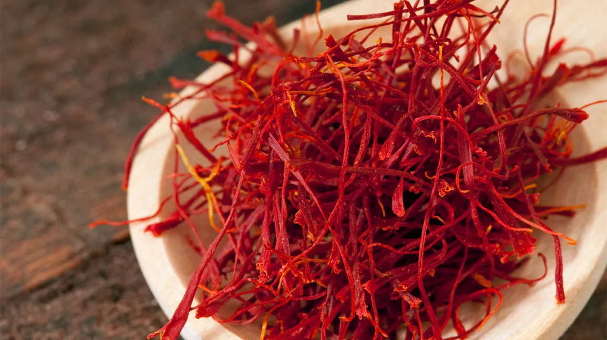

The Afgan Safferan
Herat Safferan
Herat Saffron is specialized only on top quality, well processed Afghan Saffron in the world. We sell only the finest, pure, hand-picked, premium grade saffron threads. Each batch of our Saffron is rigorously tested in certified laboratory for highest quality. It is our aim to serve our customer and provide them with the best quality Saffron products. It will keep them as the returning customers for years. Under our brands Herat Saffron, we cover the premium channel to offer one of the world’s gastronomic treasures to the most demanding palate. We adhere to strict guidelines of processing and manufacturing to make sure the best products reach our customers
Sur Safferan
Sur Saffron with strong flavor, taste, and aroma offering a delightfully savory experience to you. This is one of the finest Afghan saffron in the market available in retail packs. The brand selects the best batches of the saffron crop to make this product purer and more unique. This brand is designed for customers who are looking for cheaper prices of saffron by lower quality. If you want to make your food special, add a tinge of Sur saffron to make them tasty and smell rich
Kabuli Wala Saffron
Kabuli Wala Saffron is 100 % pure saffron brought to you in the finest condition. Quality is our topmost priority and we take special care to ensure that the product packaging is perfect. Hygienically packed, our saffron gives you a taste as well as aroma that is in comparable to any other.
Taj AlAfghan Saffron
Taj AlAfghan saffron is globally known for its unprecedented quality, fascinating fragrance, pleasant flavor, and supreme coloring strength. Taj AlAfghan saffron brings you the finest, hand-picked and genuine saffron and is packed as per GMP compliance. is globally known for its unprecedented quality, fascinating fragrance, pleasant flavor, and supreme coloring strength. Taj AlAfghan saffron brings you the finest, hand-picked and genuine saffron and is packed as per GMP compliance.